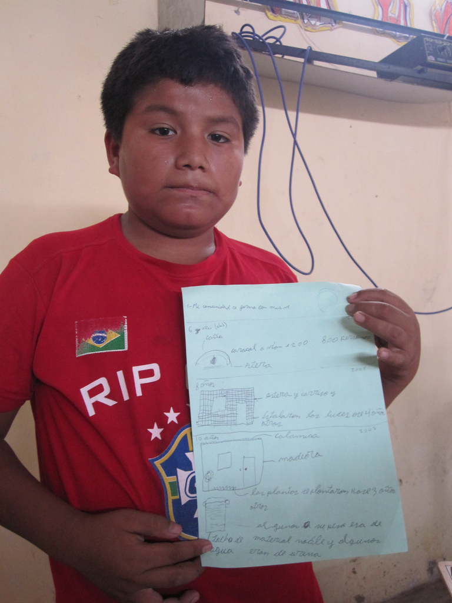

Establishing a rapid feedback loop with participants is of paramount importance, especially when they are dependent on external aid for part of the map-making process. In Juan Pablo II, the line between `researcher', `cartographer', and `participant' was blurred, as all parties were learning to create maps in a novel process. Throughout the flights, we made regular prints of the aerial imagery we were able to take and shared these with the participating students. Many of the most popular were taken from only a few dozen feet high, but showed the students and their immediate environment from a new perspective.
However, while we awaited a major success in capturing imagery (a success which took 14 days to achieve), the students were engaged in other projects. Beyond discussing and drawing maps of Juan Pablo II, students interviewed their parents and presented drawings and short reports on the history of the settlement. This resulted in some cases in very detailed accounts of how homes began as straw `caracoles' or tents, and progressed to wooden, metal, and even brick structures. One student named Frank recounted what year his family received electricity and when they began planting a garden. While these details may be exciting to hear from a historical, anthropological, or aid perspective (I had received specific requests from a cartographer from the World Bank for details on house construction), for myself and my fellow teachers, it served the more important role of contexualizing the current state of the settlement -- for the students - in a years' long process of construction and reinvention. It also emphasized the time dimension of mapping, which is often neglected, but in areas of such rapid change, can render mapping efforts irrelevant within just a few years. Indeed, the maps we were beginning to produce from aerial imagery showed that those available on Google Maps were so old as to omit entire roads and buildings.
| r0.5

|
We then asked students to produce similar work -- drawings and written reports - on how they imagined the community might look in the future. We asked in this case for a depiction of the entire settlement, and were surprised when two students brought back a three dimensional model of Juan Pablo II, set seven years in the future. While the early aerial images and mapping exercises had prompted many students to depict their community in a bird's-eye view, this maquette revealed a wealth of detail related to wealth, quality of life, and an awareness of family needs. Unlike in present-day Juan Pablo II, the model depicted many two or three-story buildings - signs of long-term tenure and financial stability, or even rental income. The buildings were largely depicted as brick, and many had stores, such as a hair salon or a flower shop. An especially interesting feature was a `Wa wa wasi', or day care center, which did not exist in present-day Juan Pablo II, but which allows two parents to work normal hours while their youngest children are cared for. Paved roads, plantings, and a soccer field completed this ambitious plan for the settlement.
This kind of map-making recalls the 3D Model Mappipng or Ground Mapping traditions of PGIS practice, with an emphasis on community assets and the explicit link between mapping and urban planning. The ability to view the model both from above as we were doing with balloons in the real Juan Pablo II, as well as from a first-person perspective by planting one's head amongst the buildings, bridged the gap between the abstracted god's-eye view and the situated personal view of the settlement. The model was extremely popular amongst not only the rest of the students and teachers, but amongst the parents and community leaders who attended our final presentation.